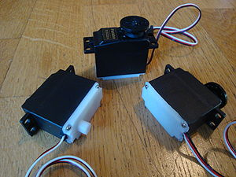
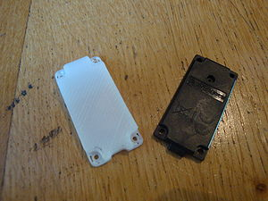
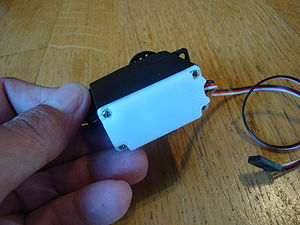
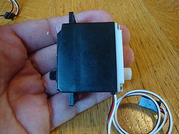
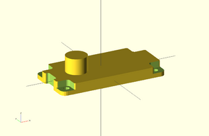

| Tapadera para servo en Thingiverse |
|---|


Tres servos con sus nuevas tapas. Dos con la tapa clásico. Uno con doble eje (click para ampliar)
Contenido
[ocultar]Introducción
Los servos se utilizan mucho para construir mini-robots. Uno de los problemas que tienen los servos típicos es que son asimétricos, y tienen sólo un eje. Para hacer articulaciones es más fácil tener un doble eje... Este ha sido un gran problema... hasta ahora :-)
La tapa del servo imprimible se puede usar simplemente como recambio de la tapa original, por si se ha roto. Pero lo interesante es modificarla para incluir elementos nuevos, como por ejemplo el falso eje. De esta manera las estructuras se simplifican muchísimo.
Esta es la primera pieza hecha utilizando las herramientas Obiscad
Instrucciones
- Imprimir la tapa "clásica", la del falso eje (o una modificación propia)
- Quitar la tapa del servo
- Atornillar la nueva
- ¡Listo! :-)
Descarga
| Servo_base.zip | Fuentes de la tapa, para OpenScad |
| servo_base.stl | Tapa del servo. Versión estándar |
| servo_base_fake_shaft.stl | Tapa del servo con falso eje |
Fotos
| Álbum de fotos completo |
|---|
|  La tapa imprimible junto a una tapa real (click para ampliar) |
 Servo con la tapa sustituida por una imprimible (click para ampliar) |
|  Tapa modificada para tener un falso eje (click para ampliar) |
 Diseño de la tapa con falso eje (click para ampliar) |


Repositorio
- Repositorio: http://svn.iearobotics.com/3D_objects/Servo_base/
Autor
Licencia
| |
Créditos
Enlaces
Noticias
- 18/Septiembre/2012: Primera versión de esta página